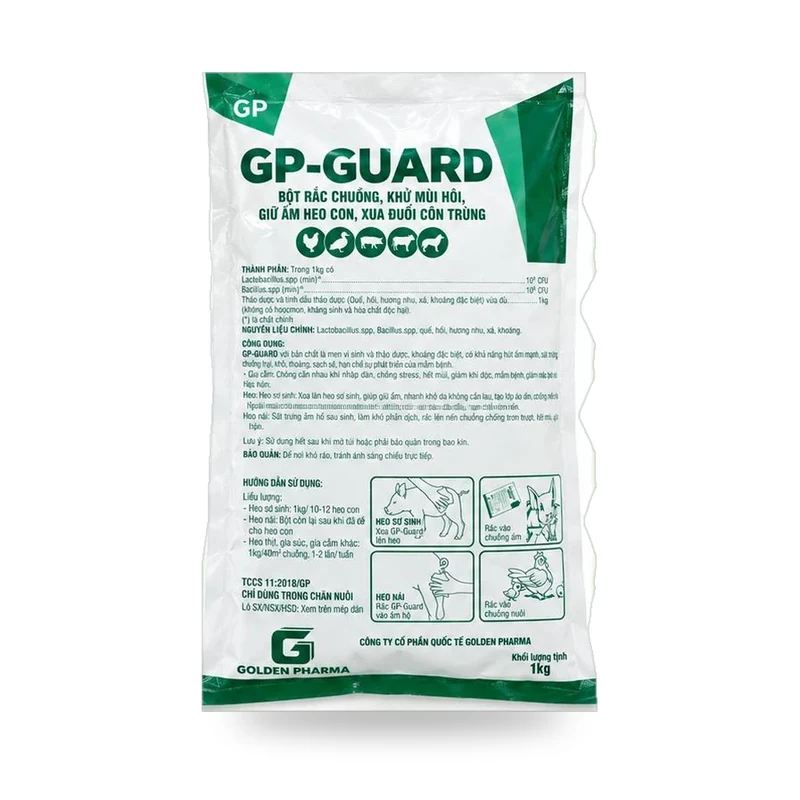
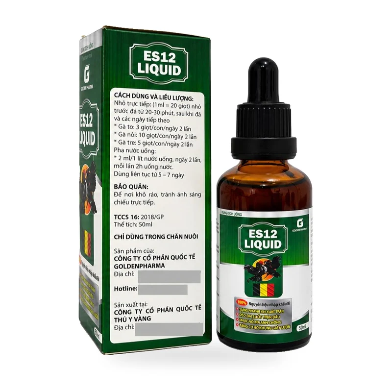
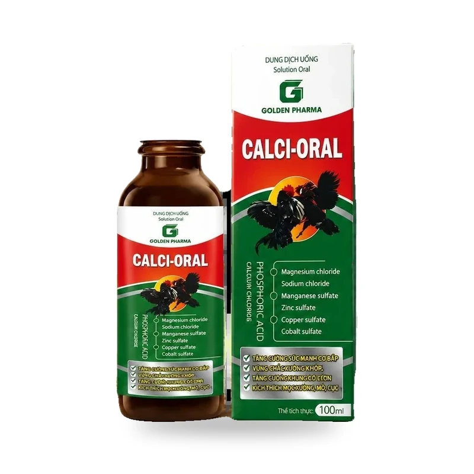
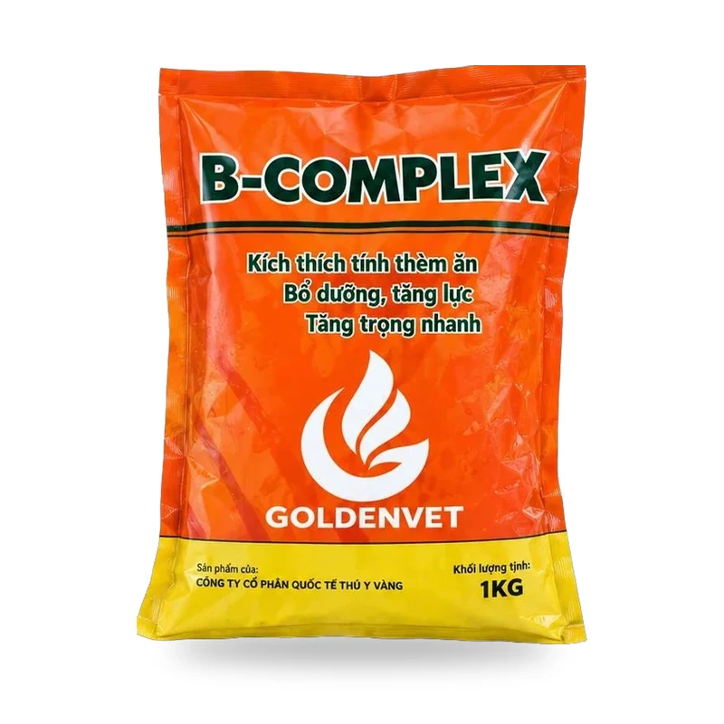

Công Ty Cổ Phần Quốc Tế Thú Y Vàng — Vì sức khỏe vật nuôi Việt Nam
Golden Pharma chuyên nghiên cứu, sản xuất và cung ứng các dòng chế phẩm sinh học, men vi sinh sống chịu kháng sinh, tổ hợp vitamin – khoáng – axit amin và thuốc thú y đặc trị chuẩn GMP-WHO.
Đồng hành cùng nhà chăn nuôi từ giai đoạn úm đến khi xuất chuồng
Trong bối cảnh chăn nuôi hiện đại đòi hỏi an toàn sinh học cao và tối ưu chi phí thức ăn (FCR), Golden Pharma tập trung phát triển các dòng sản phẩm giải quyết trực tiếp bài toán tại chuồng nuôi: khử mùi khí độc chuồng trại (GP-GUARD), ổn định hệ vi sinh đường ruột (GP-PROZIME, Men Sống Cao Tỏi), bồi bổ tăng trọng (B-Complex, Max Growth, Siêu Vỗ Béo) và phác đồ đặc trị hô hấp – tiêu chảy hiệu quả nhanh.
Với hơn 68.500+ đơn hàng thực tế trên kênh TikTok Shop chính thức @thuyvanghanoi cùng mạng lưới đại lý khắp các tỉnh thành, Golden Pharma cam kết chất lượng thật trên từng gói sản phẩm.



